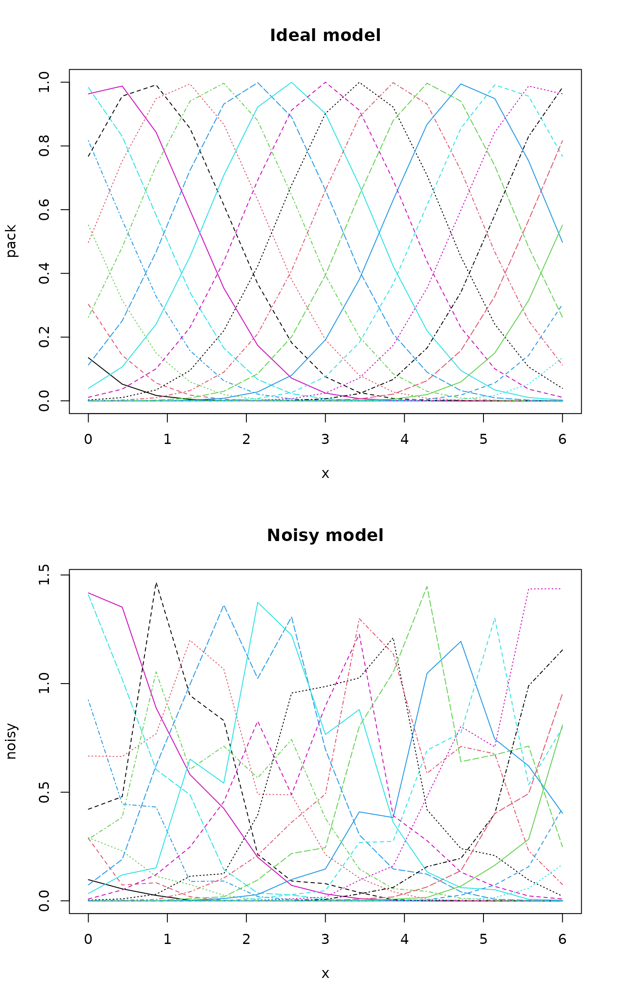
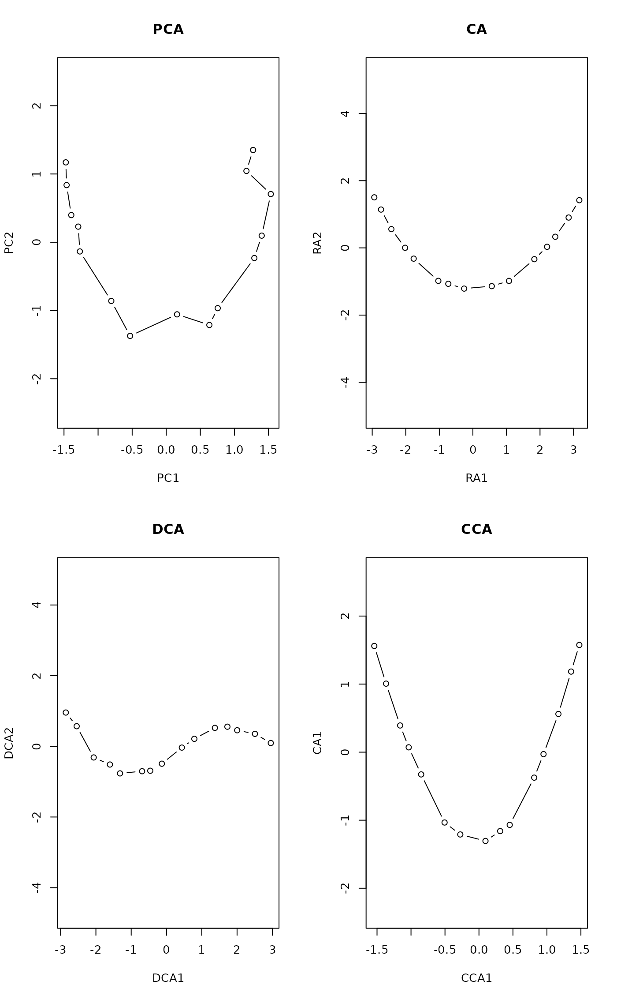

Detrended Correspondence Analysis and Basic Reciprocal Averaging
decorana.RdPerforms detrended correspondence analysis and basic reciprocal averaging or orthogonal correspondence analysis.
decorana(veg, iweigh=0, iresc=4, ira=0, mk=26, short=0, before=NULL, after=NULL) # S3 method for decorana plot(x, choices=c(1,2), origin=TRUE, display=c("both","sites","species","none"), cex = 0.8, cols = c(1,2), type, xlim, ylim, ...) # S3 method for decorana text(x, display = c("sites", "species"), labels, choices = 1:2, origin = TRUE, select, ...) # S3 method for decorana points(x, display = c("sites", "species"), choices=1:2, origin = TRUE, select, ...) # S3 method for decorana summary(object, digits=3, origin=TRUE, display=c("both", "species","sites","none"), ...) # S3 method for summary.decorana print(x, head = NA, tail = head, ...) downweight(veg, fraction = 5) # S3 method for decorana scores(x, display=c("sites","species"), choices=1:4, origin=TRUE, ...)
Arguments
| veg | Community data, a matrix-like object. |
|---|---|
| iweigh | Downweighting of rare species (0: no). |
| iresc | Number of rescaling cycles (0: no rescaling). |
| ira | Type of analysis (0: detrended, 1: basic reciprocal averaging). |
| mk | Number of segments in rescaling. |
| short | Shortest gradient to be rescaled. |
| before | Hill's piecewise transformation: values before transformation. |
| after | Hill's piecewise transformation: values after
transformation -- these must correspond to values in |
| x, object | A |
| choices | Axes shown. |
| origin | Use true origin even in detrended correspondence analysis. |
| display | Display only sites, only species, both or neither. |
| cex | Plot character size. |
| cols | Colours used for sites and species. |
| type | Type of plots, partial match to |
| labels | Optional text to be used instead of row names. |
| select | Items to be displayed. This can either be a logical
vector which is |
| xlim, ylim | the x and y limits (min,max) of the plot. |
| digits | Number of digits in summary output. |
| head, tail | Number of rows printed from the head and tail of
species and site scores. Default |
| fraction | Abundance fraction where downweighting begins. |
| ... | Other arguments for |
Details
In late 1970s, correspondence analysis became the method of choice for ordination in vegetation science, since it seemed better able to cope with non-linear species responses than principal components analysis. However, even correspondence analysis can produce an arc-shaped configuration of a single gradient. Mark Hill developed detrended correspondence analysis to correct two assumed ‘faults’ in correspondence analysis: curvature of straight gradients and packing of sites at the ends of the gradient.
The curvature is removed by replacing the orthogonalization of axes
with detrending. In orthogonalization successive axes are made
non-correlated, but detrending should remove all systematic dependence
between axes. Detrending is performed using a five-segment smoothing
window with weights (1,2,3,2,1) on mk segments --- which indeed
is more robust than the suggested alternative of detrending by
polynomials. The packing of sites at the ends of the gradient is
undone by rescaling the axes after extraction. After rescaling, the
axis is supposed to be scaled by ‘SD’ units, so that the average width
of Gaussian species responses is supposed to be one over whole axis.
Other innovations were the piecewise linear transformation of species
abundances and downweighting of rare species which were regarded to
have an unduly high influence on ordination axes.
It seems that detrending actually works by twisting the ordination
space, so that the results look non-curved in two-dimensional projections
(‘lolly paper effect’). As a result, the points usually have an
easily recognized triangular or diamond shaped pattern, obviously an
artefact of detrending. Rescaling works differently than commonly
presented, too. decorana does not use, or even evaluate, the
widths of species responses. Instead, it tries to equalize the
weighted variance of species scores on axis segments (parameter
mk has only a small effect, since decorana finds the
segment number from the current estimate of axis length). This
equalizes response widths only for the idealized species packing
model, where all species initially have unit width responses and
equally spaced modes.
The summary method prints the ordination scores,
possible prior weights used in downweighting, and the marginal totals
after applying these weights. The plot method plots
species and site scores. Classical decorana scaled the axes
so that smallest site score was 0 (and smallest species score was
negative), but summary, plot and
scores use the true origin, unless origin = FALSE.
In addition to proper eigenvalues, the function also reports
‘decorana values’ in detrended analysis. These ‘decorana
values’ are the values that the legacy code of decorana returns
as eigenvalues. They are estimated internally during iteration, and
it seems that detrending interferes the estimation so that these
values are generally too low and have unclear
interpretation. Moreover, ‘decorana values’ are estimated
before rescaling which will change the eigenvalues. The proper
eigenvalues are estimated after extraction of the axes and they are
the ratio of biased weighted variances of site and species scores even
in detrended and rescaled solutions. The ‘decorana values’ are
provided only for the compatibility with legacy software, and they
should not be used.
Value
decorana returns an object of class "decorana", which has
print, summary and plot methods.
References
Hill, M.O. and Gauch, H.G. (1980). Detrended correspondence analysis: an improved ordination technique. Vegetatio 42, 47--58.
Oksanen, J. and Minchin, P.R. (1997). Instability of ordination results under changes in input data order: explanations and remedies. Journal of Vegetation Science 8, 447--454.
Note
decorana uses the central numerical engine of the
original Fortran code (which is in the public domain), or about 1/3 of
the original program. I have tried to implement the original
behaviour, although a great part of preparatory steps were written in
R language, and may differ somewhat from the original code. However,
well-known bugs are corrected and strict criteria used (Oksanen &
Minchin 1997).
Please note that there really is no need for piecewise transformation
or even downweighting within decorana, since there are more
powerful and extensive alternatives in R, but these options are
included for compliance with the original software. If a different
fraction of abundance is needed in downweighting, function
downweight must be applied before decorana. Function
downweight indeed can be applied prior to correspondence
analysis, and so it can be used together with cca, too.
The function finds only four axes: this is not easily changed.
See also
For unconstrained ordination, non-metric multidimensional scaling in
monoMDS may be more robust (see also
metaMDS). Constrained (or ‘canonical’)
correspondence analysis can be made with cca.
Orthogonal correspondence analysis can be made with
corresp, or with decorana or
cca, but the scaling of results vary (and the one in
decorana corresponds to scaling = "sites" and
hill = TRUE in cca.). See
predict.decorana for adding new points to an
ordination.
Examples
#> #> Call: #> decorana(veg = varespec) #> #> Detrended correspondence analysis with 26 segments. #> Rescaling of axes with 4 iterations. #> #> DCA1 DCA2 DCA3 DCA4 #> Eigenvalues 0.5235 0.3253 0.20010 0.19176 #> Decorana values 0.5249 0.1572 0.09669 0.06075 #> Axis lengths 2.8161 2.2054 1.54650 1.64864 #>summary(vare.dca)#> #> Call: #> decorana(veg = varespec) #> #> Detrended correspondence analysis with 26 segments. #> Rescaling of axes with 4 iterations. #> #> DCA1 DCA2 DCA3 DCA4 #> Eigenvalues 0.5235 0.3253 0.20010 0.19176 #> Decorana values 0.5249 0.1572 0.09669 0.06075 #> Axis lengths 2.8161 2.2054 1.54650 1.64864 #>#> Species scores: #> #> DCA1 DCA2 DCA3 DCA4 Totals #> Callvulg 0.04119 -1.53268 -2.55101 1.32277 45.07 #> Empenigr 0.09019 0.82274 0.20569 0.30631 151.99 #> Rhodtome 1.34533 2.47141 -0.34970 -1.13823 8.39 #> Vaccmyrt 1.86298 1.71424 -0.60535 -0.40205 50.71 #> Vaccviti 0.16641 0.71095 0.00313 -0.55801 275.03 #> Pinusylv -0.73490 1.62050 -1.60275 -2.10199 4.11 #> Descflex 1.97061 1.81651 1.74896 -0.91463 5.60 #> Betupube 0.79745 3.36374 -0.94546 -1.01741 0.29 #> Vacculig -0.08912 -1.17478 2.86624 0.87025 15.22 #> Diphcomp -0.82669 -0.44195 2.58579 -0.38459 3.24 #> Dicrsp 2.37743 -0.27373 -0.47099 -1.89036 40.50 #> Dicrfusc 1.58267 -1.33770 -1.33563 1.47417 113.52 #> Dicrpoly 0.86689 2.39519 -0.82064 -3.41534 6.06 #> Hylosple 2.66242 1.19669 1.48288 -0.69978 18.04 #> Pleuschr 1.64098 0.15607 0.30044 -0.26717 377.97 #> Polypili -0.56213 0.14009 0.25198 0.49177 0.61 #> Polyjuni 1.22244 -0.89173 0.61287 3.60066 13.85 #> Polycomm 1.01545 2.08388 0.06402 0.84199 0.71 #> Pohlnuta -0.00712 1.09704 -0.82126 -1.59862 2.62 #> Ptilcili 0.48093 2.86420 -0.71801 -1.02698 14.01 #> Barbhatc 0.58303 3.71792 -0.84212 -1.88837 3.19 #> Cladarbu -0.18554 -1.18973 0.68113 0.55399 255.05 #> Cladrang -0.83427 -0.78085 0.90603 0.70057 388.71 #> Cladstel -1.67768 0.98907 -0.83789 -0.60206 486.71 #> Cladunci 0.97686 -1.70859 -1.68281 -2.26756 56.28 #> Cladcocc -0.27221 -0.76713 -0.63836 0.66927 2.79 #> Cladcorn 0.29068 -0.97039 0.50414 0.95738 6.22 #> Cladgrac 0.21778 -0.41879 0.06530 -0.31472 5.14 #> Cladfimb 0.00889 -0.23922 -0.26505 0.33123 3.96 #> Cladcris 0.37774 -1.09161 -0.55627 0.23868 7.47 #> Cladchlo -0.91983 1.54955 -0.58109 -1.48643 1.16 #> Cladbotr 0.66438 2.19584 -0.90331 -0.91391 0.47 #> Cladamau -0.96418 -0.98992 2.71458 0.52352 0.14 #> Cladsp -1.12318 -0.15330 -0.69833 0.44040 0.52 #> Cetreric 0.27163 -1.28867 -0.81682 -1.93935 3.60 #> Cetrisla -0.50158 2.22098 -1.16461 -1.89349 2.03 #> Flavniva -1.67937 -3.67985 4.15644 3.18919 11.85 #> Nepharct 2.18561 -0.82837 0.71958 5.81930 5.26 #> Stersp -0.78699 -2.01214 2.31212 2.03946 17.52 #> Peltapht 0.45763 -0.34395 0.09916 1.34695 0.76 #> Icmaeric 0.04950 -1.97605 1.41509 2.10154 0.22 #> Cladcerv -1.21585 -2.30519 2.55186 3.41532 0.10 #> Claddefo 0.60517 -1.19771 -0.33388 0.22585 10.23 #> Cladphyl -1.53959 1.48574 -1.43209 -1.52387 0.80 #> #> Site scores: #> #> DCA1 DCA2 DCA3 DCA4 Totals #> 18 -0.1729 -0.2841 0.4775 0.2521 89.2 #> 15 0.8539 -0.3360 0.0708 0.0924 89.8 #> 24 1.2467 -0.1183 -0.1211 -0.8718 94.2 #> 27 1.0675 0.4169 0.2897 -0.1758 125.6 #> 23 0.4234 0.0112 0.2179 0.1265 90.5 #> 19 0.0252 0.3600 -0.0263 -0.1168 81.3 #> 22 1.0695 -0.3707 -0.4285 0.4145 109.8 #> 16 0.7724 -0.5325 -0.2856 0.5269 88.5 #> 28 1.6189 0.5482 0.2342 -0.3333 110.7 #> 13 -0.2642 -0.6851 -0.3777 0.5003 101.9 #> 14 0.6431 -0.9604 -0.6000 -0.2885 81.7 #> 20 0.4504 -0.1666 0.1850 -0.1291 64.1 #> 25 1.2501 -0.2248 0.0244 0.3741 94.1 #> 7 -0.3910 -0.7618 0.8640 0.5557 103.4 #> 5 -0.6407 -0.9427 0.9465 0.7769 94.8 #> 6 -0.4523 -0.5529 0.3988 0.2781 110.9 #> 3 -1.1043 0.2106 -0.0653 -0.0539 106.7 #> 4 -0.9454 -0.5974 0.4639 0.4889 84.8 #> 2 -1.1971 0.5691 -0.3246 -0.2522 119.1 #> 9 -1.0983 0.7850 -0.5274 -0.4848 122.6 #> 12 -0.8673 0.5621 -0.3254 -0.3217 119.8 #> 10 -1.1842 0.7442 -0.4995 -0.3917 122.4 #> 11 -0.4134 0.0260 0.0107 -0.0682 112.8 #> 21 0.3210 1.2450 -0.2541 -0.5253 99.2 #>plot(vare.dca)### the detrending rationale: gaussresp <- function(x,u) exp(-(x-u)^2/2) x <- seq(0,6,length=15) ## The gradient u <- seq(-2,8,len=23) ## The optima pack <- outer(x,u,gaussresp) matplot(x, pack, type="l", main="Species packing")opar <- par(mfrow=c(2,2)) plot(scores(prcomp(pack)), asp=1, type="b", main="PCA") plot(scores(decorana(pack, ira=1)), asp=1, type="b", main="CA") plot(scores(decorana(pack)), asp=1, type="b", main="DCA") plot(scores(cca(pack ~ x), dis="sites"), asp=1, type="b", main="CCA")### Let's add some noise: noisy <- (0.5 + runif(length(pack)))*pack par(mfrow=c(2,1)) matplot(x, pack, type="l", main="Ideal model") matplot(x, noisy, type="l", main="Noisy model")par(mfrow=c(2,2)) plot(scores(prcomp(noisy)), type="b", main="PCA", asp=1) plot(scores(decorana(noisy, ira=1)), type="b", main="CA", asp=1) plot(scores(decorana(noisy)), type="b", main="DCA", asp=1) plot(scores(cca(noisy ~ x), dis="sites"), asp=1, type="b", main="CCA")par(opar)